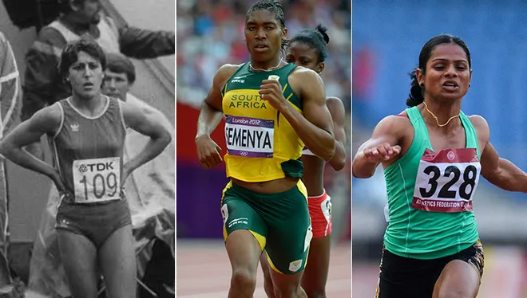

Synopsis
This week, World Boxing, the international governing body for Olympic boxing, announced new sex verification testing requirements for female boxers to compete in World Boxing sanctioned events. In their announcement they stated that Imane Khelif has been notified that she must undergo testing before competing in the next event, the Eindhoven Box Cup.
Imane was named in the announcement as a result of controversy stemming from her fight in the 2024 Paris Olympics. She won against Italian boxer Angela Carini, who quit after receiving two blows from Imane that reportedly caused her intense pain. This triggered a world debate over Khelif’s sex, with accusations—most notably from U.S. President Trump and other influential figures—claiming she was transgender or male.
Concerns over Imane’s sex started in 2022 when boxing was governed by the International Boxing Association (IBA). Imane was tested in May that year and the results didn’t match the eligibility criteria. The IBA reported the information to the International Olympic Committee. After a lack of response from the IOC, the IBA decided to conduct a second test in March 2023, confirming the initial test results. The specific test conducted or criteria for eligibility have never been provided by the IBA, citing privacy. They stated that Imane has the results and can publish herself.
Khelif was then banned from further competitions and offered the chance to appeal, which Khelif did. However, her appeal was dropped for procedural reasons after she failed to make an initial payment to the Court of Arbitration for Sports (CAS), a process that can cost more than $40,000.
The IOC had already suspended the IBA’s recognition in 2019 over long standing financial concerns, sports integrity, and governance issues. The IBA was accused of having close ties to Russian political and business interests and systemic corruption in judging and refereeing. Full withdrawal from the committee was completed on June 22nd, 2023 and the IOC took over governance of boxing for the 2024 Paris Olympics. This changed the eligibility criteria to qualify for boxing, which allowed Imane to compete in Paris.
Early Sex Testing and Its Failures
Concerns of men entering women’s sports has persisted since the 1940’s when sex verification in sports began with certificates provided by a physician. These tests were initially a visual inspection but became a test for Barr bodies, which identified XX chromosomes.Those that failed the test were told in complete secrecy so they could withdraw without people knowing the real reason. The scientific community expressed concerns because there were instances where a person would not have two X chromosomes, or even an XY chromosome, but have feminized external genitals and be assigned female at birth. There were also concerns, specifically with those who had a Y chromosome, if these people had advantages over their XX competitors due to their “male” genetic make up.
This issue was compounded because there were often no external signs of these issues and it would go undiagnosed in women until they had a full gynecological exam, which typically doesn’t occur until after puberty begins—often the only noticeable sign being a lack of menstruation, which is already not unusual for elite female athletes, even if they have XX chromosomes.
There are no known examples of men pretending to be a woman to compete against women in a sporting category, which was the concern that triggered sex testing. Many women, or women with DSD, did face repercussions once their ambiguities were revealed.

Maria
Josa Martinez-Patino, a Spanish hurdler with Androgen Insensitivity
Syndrome, a condition where a genetic male, is partially or completely
unresponsive to male sex hormones. She passed and received her “certificate
of femaleness” in 1983. However, when tested using a different method in
1985, she didn’t and refused the advice to pretend she had an injury and
quit. Instead she competed as scheduled and won. The press reported her
condition and she was subsequently stripped of all medals won, expelled from
her athletics residence, had her scholarships revoked, lost many friends,
and a fiancé.
In the 1990s, the test to confirm sex was changed to the Polymerase Chain Reaction (PCR), which looks specifically for male genetic material. These tests faced harsh criticism because having such material does not necessarily confer a male performance advantage. The PCR test eventually ceased to be used as a compulsory test for female athletes in the mid-2000s. The IAAF released a new policy on gender verification that addressed concerns over an athlete’s gender. These efforts allowed athletes with a range of genetic variations that were not deemed performance-enhancing to compete. Even in cases where the genetic variation might confer a potential advantage, athletes could still be eligible if they agreed to undergo specified medical or surgical interventions, acknowledging that their genetic makeup could not be altered.
Controversy broke out again when Caster Semenya won the 800m by almost 2 seconds. Semenya has hyperandrogenism, which allows her to naturally produce very high levels of testosterone due to undescended testes she didn’t know until she received a sex test after reported concerns over her sex.
Initially Semenya complied with IAAF’s regulations to lower her testosterone with medication. However, she eventually refused to continue and challenged the IAAF”s regulation in the Court of Arbitration for Sport. The court ruled to support the regulations requiring medical interventions for people with DSD to compete in female sport events. The IAAF claimed that female athletes with high testosterone have a 1.8 to 4.5 percent advantage over females with lower testosterone levels.
Outside of boxing and track and field, other governing associations have not placed limitations on DSD athletes but are reporting to be monitoring and researching to determine if there is a need.
The Ideological Perspectives
Depending on your preference or media, the reporting on this issue can leave out important concerns from the other side. Jonathan Haidt’s Moral Foundations Theory[1] explains how people’s ideological differences stem from the varying moral principles they prioritize, which in turn shape their policy preferences.
|
Left-Wing Perspective |
Right-Wing Perspective |
|---|---|
|
Moral Foundations Theory- Care/Harm |
|
|
Emphasizes harm to DSD women from forced medical interventions and public outing of private medical information. Khelif has been mischaracterized as transgender or a male by figures like Donald Trump and J.K. Rowling. World Boxing faced backlash after naming her when announcing new sex testing rules. |
Emphasizes harm to cisgender women, including lost opportunities and risk of physical injury when competing against athletes with elevated testosterone. Angela Carini forfeited her match after reportedly experiencing unusually intense blows from Khelif. |
|
Moral Foundations Theory- Fairness/Cheating |
|
|
Views exclusion of DSD women as unfair punishment for natural variation. Michael Phelps is often celebrated for the genetic advantages that won him gold medals, like his extended armspan, large hands, and lower production of lactic acid. Athletes at the elite level often have genetic advantages, but women with genetics that afford them higher levels of testosterone are discriminated against. |
Views inclusion of DSD athletes without regulation as unfair to other women. World Boxing reported their new policy on “Sex, Age, and Weight” was to ensure safety of all competition participants, including Khelif. |
|
Moral Foundations Theory- Authority |
|
|
Sees mandatory sex testing as overreach—questioning the legitimacy and ethics of sports authorities who target female bodies for regulation. |
Values strong oversight by sports authorities to uphold rules and preserve traditional categories like women’s divisions. |
|
Moral Foundations Theory- Liberty/Oppression |
|
|
Frames the regulation of DSD athletes as a form of institutional oppression rooted in outdated notions of sex and gender. |
Sees inclusion of DSD athletes as an encroachment on hard-won spaces for women, potentially disadvantaging them. |
Both sides have understandable concerns for anyone willing to consider the strong man versions of their perspective.
Women have their own sport leagues specifically because they do not have the same physical advantages as men. Women with DSD have some level of male genetics that appear to grant them some advantage over women without. Barring women with DSD can be seen as working in the “spirit” that initially led to the development of female only sports leagues.
Conversely, women with DSD are women. They often have female genitalia, were raised female and feel as though they are female. Sexual development is a spectrum from female to male with many resulting possibilities. In the world of elite athletic performance, it’s those genetic advantages that often give athletes the edge needed to compete. The case of the women outlined here, that edge may come from a Y chromosome. Is it fair to force them to suppress that if it’s their natural state?
These aren’t frivolous positions. They reflect real fears about exclusion, fairness, and identity—but the conversation rarely treats them with that seriousness. Instead, each side reaches for the easiest target, painting the other as either bigoted or delusional. That kind of discourse isn’t just unhelpful—it’s dishonest.
We have to stop asking who deserves to be heard, and start asking what truths each perspective brings to the table. The crisis isn’t about who belongs in women’s sports—it’s that we’ve built a binary system in a non-binary world, and neither side is ready to admit just how fragile that foundation really is.
My (very biased) Take
For me, this issue is on much firmer footing than the transgender debate, because this is a natural state for these women, but honestly, in both cases, I don’t see these women as having a definitive advantage over typically genetic women.
I’ll set aside the debate on trans women in sports for another day (see you in the comments!) but when I compare the two groups, it seems like DSD women are more likely to perform better than transwomen, but they are still firmly in the category of female. The most striking example is Caster Semenya. She holds records in 6 of the 10 track and field events in her classification. In the 800 meters—her strongest event—she beat the competition by nearly two full seconds. That’s huge in elite sport, where medals are often decided by hundredths of a second. And yet? She wouldn’t even qualify for elite male high school finals.
The concern is that these women have an unfair advantage, but why is their advantage disqualifying when others aren’t.
Katie Ledecky, like Michael Phelps, has a killer combo of natural traits: high VO₂ max, a long torso, short legs, and unusually low blood lactate levels. That’s a genetic cocktail made for swimming. It helped her beat the next-fastest swimmer not named Ledecky by over nine seconds. Should we ask her to take supplements to raise her lactate levels, just to level the playing field?
Simone Biles has the advantage by being one of the shortest and most muscular gymnasts. Her stature gives her a lower center of gravity and faster rotation. Sure, she is on the low end of the “normal range” of female gymnasts, but she is right on the money for the average height of female gold-medal gymnasts that have won since 1970. No one is telling Simone Biles or other gold medalists that their height gives them undue advantage over 5 foot athletes so they are too short for the ride.
Elite athletes are full of genetic anomalies, but folks are only getting mad at a certain type of genetic advantage. And I’m not here to call those people bigoted, (although there are some that should certainly be charged accordingly…). Those people are getting at something. At some point, the differences do make a competition unbalanced and unfair. While many people think Semenya should be able to run against women, no one thinks Usain Bolt should.
Fair competition was the main reason for separating sports into male and female categories. The problem is, that isn't binary, it's a spectrum, and at some point on that spectrum, a person’s physiology crosses over into a zone we culturally code as “male.” At some point, it is unfair to the women they compete against. Instead of having that conversation, people are lobbing slurs or denying a person their only known identity before they got sex tested.
You want to know another uncomfortable truth? The way we really find out when a female becomes male or what “unfair” means, is we do the damn thing. There is only so much testing and theorizing a person can do before they have to let shit rip and see how it works in the real world. We get long term data by looking at it – in the real world – for a long time.
We also potentially have the population for it, at least in elite sports. Some research has shown that DSD is 140 times more prevalent than it is in the normal female population. It's possible with numbers like that, and if there are real and persistent advantages to being a DSD, there can actually be a league of their own. Now, they would probably have to play against genetically typical women in non-elite sports until they got to an elite status.
But honestly, I wouldn’t wish that on my worst enemy.
Imane Khelif followed the rules. She won fair and square. And for that, half the world called her a man, a fraud, a threat. That’s the cost of being a DSD woman in sport. For decades, women like her were quietly told to fake injuries and bow out—anything to avoid the social fallout of being “found out.” Because lying was safer than honesty.
These women aren’t allowed to be real—anywhere. They are getting the same message from the world as they get in sports: bow out quietly, disappear, and don’t make us uncomfortable.
That has to change. Because until it does, we’re not having a real conversation about fairness. We’re just performing one.
Moral Foundations Theory posits that moral judgments are shaped by core values: care/harm (compassion vs. cruelty), fairness/cheating (justice and equality), authority (respect for tradition and hierarchy), and liberty/oppression (resistance to domination and support for autonomy). ↑